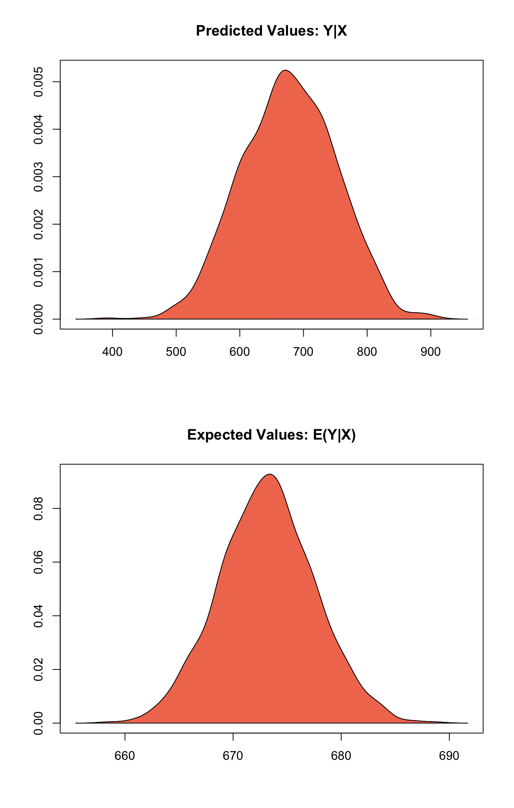

Built using Zelig version 5.1.4.90000
From Zelig version 5.1-2 it’s possible to estiamate a limited range of models with functions other than zelig and pass them to setx.
For example, you may want to estimate a model with survey weights using the surveyglm function from the survey package. This would allow you to can take full advantage of the options that the package has for model estimation and post-estimation. You may then want to simulate and plot quantities of interest from your fitted model. To do, this use the following code:
# Load packages and data
library(zeligverse)
library(survey)
library(dplyr)
data(api)
# Fit model with surveyglm
dstrat <- svydesign(id = ~1, strata = ~stype, weights = ~pw, data = apistrat,
fpc = ~fpc)
m1 <- svyglm(api00 ~ ell + meals + mobility, design = dstrat)
# Set fitted values, simulate quantities of interest, & plot with Zelig
m1 %>% setx() %>% sim() %>% plot()
Currently, the following model types can be passed directly to setx without a need to be estimated by Zelig:
| class | family | link | zclass |
|---|---|---|---|
| lm | gaussian | identity | zls |
| glm | gaussian | identity | zls |
| glm | binomial | logit | zlogit |
| glm | binomial | probit | zprobit |
| glm | poisson | log | zpoisson |
| glm | Gamma | inverse | zgamma |
| svyglm | gaussian | identity | znormalsurvey |
| svyglm | binomial | logit | zlogitsurvey |
| svyglm | quasibinomial | logit | zlogitsurvey |